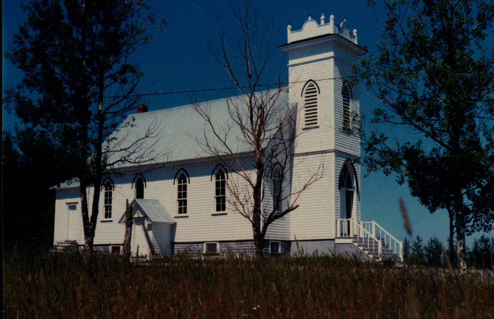

St. Paul’s Presbyterian Church

Prior to 1836, residents of Black River traveled to Bay du Vin to attend church which, although nominally Presbyterian, was used by other denominations as well. In 1836 a new church, St Stephen’s Presbyterian, was opened in Black River and was situated within the bounds of what is now the Black River/St Stephen’s cemetery. The original church building was replaced in 1906.
Following Church Union in 1925, St. Stephens Presbyterian Church became St. Stephens United Church and continuing Presbyterians built a new Presbyterian Church, St. Paul’s, shown in the photo above. St. Paul’s Presbyterian Church was opened on July 21, 1930. In 1939, the church was served by a student minister, Rev. David C. MacLelland who boarded in the community.